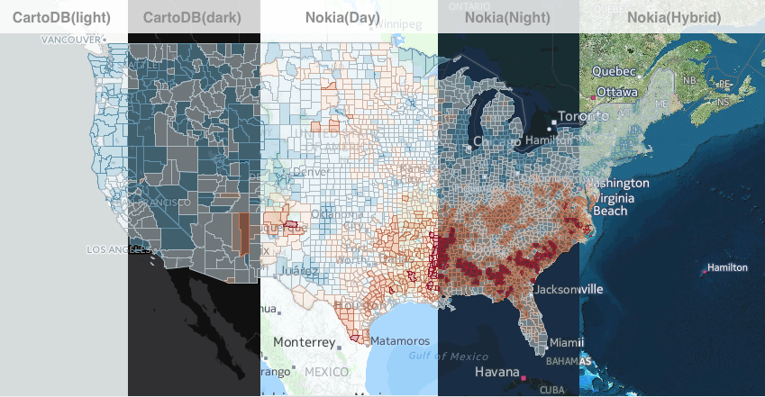
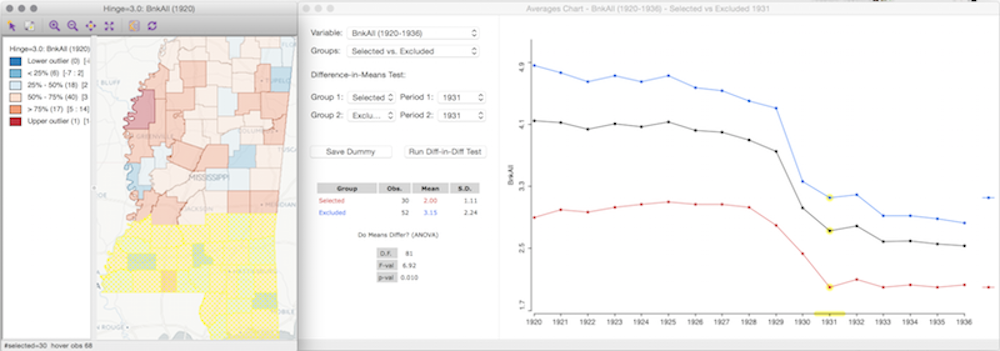
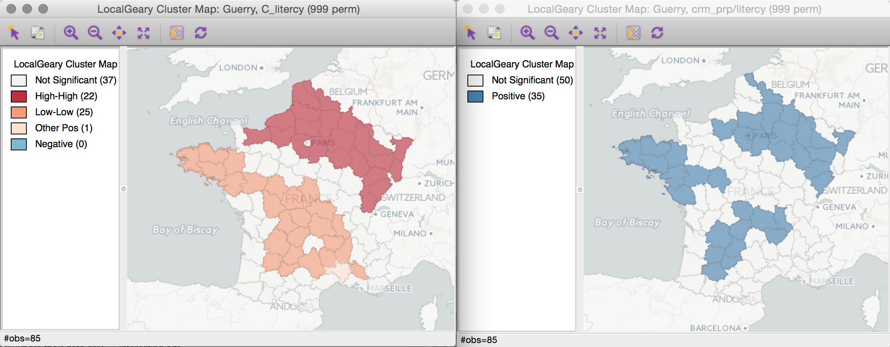
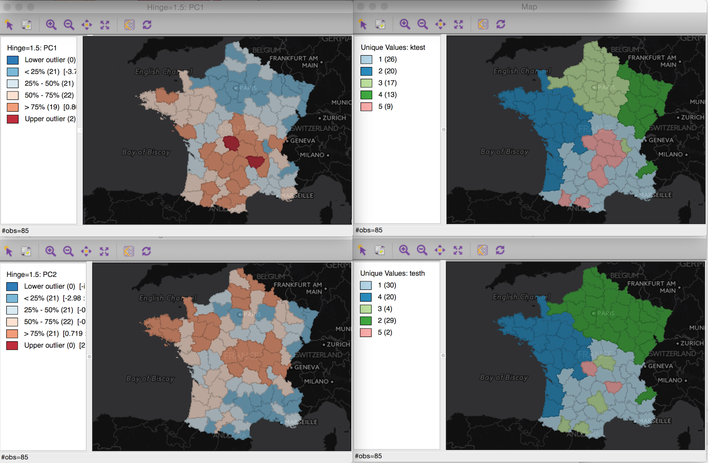
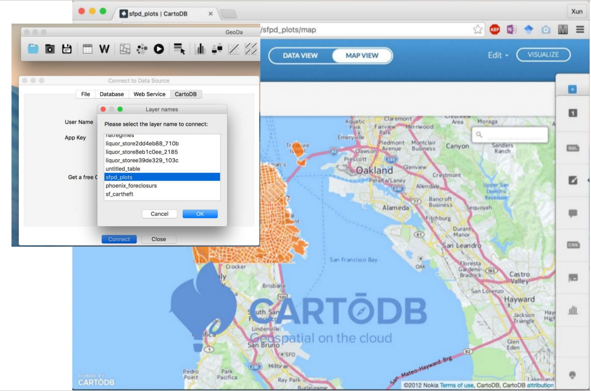

GeoDa 1.12 介绍
GeoDa是一个免费、开源的空间数据分析软件。 通过探索和建模空间模式，GeoDa向用户提供了全新的空间数据分析视角。
GeoDa是由 Luc Anselin 博士和其团队开发的. 该程序提供了友好的用户界面以及丰富的用于探索性空间数据分析(ESDA)的方法，比如空间自相关统计(spatial autocorrelation statistics)和基本的空间回归分析(spatial regression analysis)。
从2003年2月GeoDa发布第一个版本以来， GeoDa的用户数量 成倍的增长。截止2017年6月，GeoDa的用户数量已经超过了20万。 包括哈佛，麻省理工、康奈尔等著名大学都在实验室中安装并使用GeoDa软件。GeoDa软件得到了用户和媒体广泛的好评，被称之为“一个非常重要的分析工具”，“一款制作精良的软件”，有着“激动人心的进展”。
GeoDa最新发布的版本是1.12。新版本包含了很多新的功能，比如：单变量和多变量的局部Geary聚类分析，集成了经典的（非空间）聚类分析方法（PCA，K-Means,Hierarchical聚类--详细请参考Hoon et al's 2013 "C Clustering Library"）。同时GeoDa也支持更多的空间数据格式，支持时空（space-time)数据，支持包括Nokia和Carto提供的底图(Basemap)显示，均值比较图表(averages charts)，散点图矩阵(scatter plot matrices)，非参数的空间自相关图(nonparametric spatial autocorrelation--correlogram)，以及灵活的数据分类方法(flexible data categorization)。
新的GeoDa使用手册正在编写中。如果您有兴趣，可以点击这个链接阅读GeoDa 1.12中提供的空间数据分析功能。
全新的外观
经过了十多年的积累，GeoDa现在有了一个全新的设计:


跨平台：GeoDa可以运行在Windows， MacOSX 和 Linux (Ubuntu) 系统上。
GeoDa支持更多的空间数据格式
引入GDAL软件库后，GeoDa目前可以支持多种矢量数据格式，包括：ESRI Shapefile, ESRI geodatabase, GeoJson, MapInfo, GML, KML等。 同时GeoDa也能从表格数据(如：.csv, .dbf, .xls, .ods)中通过制定坐标数据（X，Y或者经纬度）来创建点空间数据。 GeoDa也能让用户将感兴趣的、选中的数据另存为一个新的矢量数据。

通过相互关联的地图和图表探索统计结果
In contrast to programs that visualize raw data in maps, GeoDa focuses on exploring the results of statistical tests and models through linked maps and charts.

时空模式分析
You can now group the same variable across time periods in the new Time Editor to explore statistical patterns across space and time. Then explore results as views change over time with the Time Player.

添加包括Nokia和CartoDB提供的底图(Basemap)
If your spatial data are projected (.prj file), you can now add a basemap to any map view, including cluster maps, for better orientation and for ground-truthing results.

时空数据的均值比较
A new Averages Chart compares values that are averaged over time and/or space and tests if the differences in these means are significant. For instance, first select if you want to compare means of selected vs. unselected observations in the same time period or compare all observations for different time periods. A basic pre-post/impact-control test then indicates if your results changed over time and space (using an F-test and difference-in-difference test).

检测多元空间关系
A scatter plot matrix allows you to explore multiple bivariate correlations at once. In this example, the regression slopes for selected, unselected and all police precincts in San Francisco are shown to explore relationships between four types of crime.

检测随时间的变化在空间上聚集
Use a global or local Differential Moran?s I test to find out if a variable?s change over time in a given location is statistically related to that of its neighbors. For instance, this local (LISA) cluster map shows hotspots in New York with larger changes in the share of kids between 2002 and 2008 (and coldspots with smaller changes).

单/多变量的空间聚类分析
Luc Anselin (2017) recently extended Geary's c with a new local indicator of spatial association. This is applied to the classic data set of "moral statistics" of France (Guerry, 1833) to show significant high and low spatial concentrations of literacy (left map) and significant associations of property crime and literacy (right map).

集成经典的数据聚类方法分析空间数据
You can now map patterns of several classic non-spatial cluster techniques, including principal component analysis (left maps), k-means (top right), and hierarchical clustering (bottom right). Using the same data as in the example above, the maps below show local clusters of property crime, literacy, and suicide.

检测空间相关性边界阈值
A nonparametric spatial autocorrelation test (correlogram) is now available to determine distance thresholds when the values of neighboring pairs are no longer correlated.

探索多种空间数据分类
With the new category editor, you can explore how sensitive your results are to changes in the thresholds that categorize your data. In this example the thresholds in the conditional map (right) are based on the categories that can be adjusted in the category editor (left).

使用GeoDa连接Carto云端空间数据库
You can now load data from CartoDB into GeoDa and save results back to the CartoDB table. See how this works.

GeoDa引用的相关的软件
GeoDa is released under a GPL license. It builds on several open source libraries and source-code files. Below is the list of the key projects that we would like to acknowledge.
GDAL Libraries, version 1.10. License: X/MIT style Open Source license. Authors: Many. Links: http://www.gdal.org/
Boost Libraries, version 1.53. License: Boost Software License - Version 1.0. Authors: Many. Links: http://www.boost.org/ http://www.boost.org/LICENSE_1_0.txt
Boost.Polygon Voronoi Library, Boost version 1.53. License: Boost Software License - Version 1.0. Author: Andrii Sydorchuk. Links: http://www.boost.org/ http://www.boost.org/LICENSE_1_0.txt
wxWidgets Cross-Platform GUI Library, version 2.9.4. License: The wxWindows Library Licence. Authors: Julian Smart, Robert Roebling, and others. Links: http://www.wxwidgets.org/ http://www.opensource.org/licenses/wxwindows.php
CLAPACK Linear Algebra Libraries, version 3.2.1. Authors: Many. License: Custom by University of Tennessee. Links: http://www.netlib.org/clapack/ http://www.netlib.org/lapack/lapack-3.2/LICENSE
Approximate Nearest Neighbor Library, version 0.1. Note: Full source of 0.1 release included in kNN directory. Authors: Sunil Arya and David Mount. License: See kNN/AHH.h in included source files. Links: http://www.cs.umd.edu/~mount/ANN/
FastArea.c++ source code. Note: The source for functions findArea and ComputeArea2D are in the file GenGeomAlgs.h from FastArea.c++ in Journal of Graphics Tools, 7(2):9-13, 2002 Author: Daniel Sunday. License: Unknown. Links: http://jgt.akpeters.com/papers/Sunday02/FastArea.html
logger.h source code. Author: Seweryn Habdank-Wojewodzki. Note: We have copied the source for logger.h and modified it slightly to work with wxString. License: Boost Software License - Version 1.0. Links: http://accu.org/index.php/journals/1304
nullstream.h source code. Author: Maciej Sobczak. License: See logger.h in included source files. Links: http://www.msobczak.com/
The C Clustering Library. Authors: Hoon, Michiel de, Seiya Imoto, Satoru Miyano. (2013). The University of Tokyo, Institute of Medical Science, Human Genome Center. License: Python License. Links: The C Clustering Library.
致谢
The development of GeoDa has most recently been supported by the National Science Foundation, the National Institutes of Health, the National Institute of Justice, and the Agency for Healthcare Research and Quality.
技术支持
We are currently updating the documentation to reflect the new features in GeoDa 1.10. The Openspace listserv supports technical questions about GeoDa.
版权信息
GeoDa uses a GPL License (General Public License).
联系方式
如果有任何疑问，请联系我们。